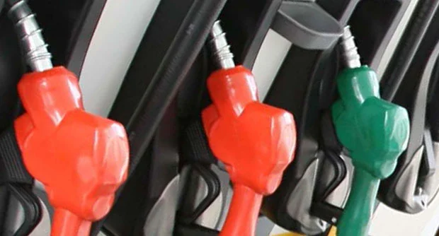

Calls persist for Duterte to suspend fuel tax collection
By: Julie M. Aurelio, Karl R. Ocampo - @inquirerdotnet Philippine Daily Inquirer / 05:40 AM October 30, 2021
MANILA, Philippines — What used to be a weeklong fishing trip for skipper Joseph Jeruela and his fishing crew to Panatag (Scarborough) Shoal from their hometown of Infanta, Pangasinan, has gotten shorter and shorter, no thanks to rising fuel costs.
Fishermen typically spend about 70 percent of their capital on fuel, but with recent increases in pump prices particularly of diesel, Jeruela’s boss who also owns the boat can only give them fuel money enough for just three days at sea.
“There’s nothing you can do about it. You just get used to it,” Jeruela said in Filipino, keeping his fingers crossed as he still hoped for a good catch despite everything.
His frustrations resonate with that of many workers in the fisheries and agriculture sectors, where daily incomes can be drastically shrunk and livelihood opportunities undercut by spiraling oil prices and inflation.
Their plight represents the current realities that have prompted 36 agricultural organizations, led by Samahang Industriya ng Agrikultura (Sinag), to make a collective appeal for President Rodrigo Duterte to issue an executive order suspending the collection of the excise on fuel products.
The groups believe the President can issue such an order since the country remains under a state of emergency because of the COVID-19 pandemic.
Executive order, House bill
At the House of Representatives, Deputy Speaker and Cagayan de Oro City Rep. Rufus Rodriguez filed on Thursday a bill also seeking a four-year suspension of the collection of the excise on fuel, which was imposed by Section 43 of Republic Act No. 10963, also known as the Tax Reform Acceleration and Inclusion (TRAIN) law.The TRAIN law provided for a yearly increase in the tax levied on petroleum products such as gasoline, diesel, kerosene, and liquefied petroleum gas (LPG) for a period of three years, from 2018 to 2020. By the final year, the excise were as follows: gasoline at P10 per liter; diesel at P6 per liter; kerosene at P5 per liter, and LPG at P3 per kilo.
The value-added tax (VAT), computed based on the basic price plus the excise, further bloats the pump prices of petroleum products.
Prior to TRAIN, the tax rates were P4.35 and P 5.35 per liter on regular gasoline and unleaded gasoline, respectively. Diesel, kerosene and LPG were not covered by the tax.
Under Rodriguez’s bill, the suspension of the collection from 2022 to 2025 will cover only the amount of tax added by the TRAIN law. This means that during the four-year period, the government will continue collecting taxes on oil products but based on the old rates provided under the National Internal Revenue Code, such as P4.35 and P5.35 per liter on regular and unleaded gasoline, respectively.
The lawmaker said the suspension was “one way to help the Filipino people” amid the coronavirus pandemic and “should result in a corresponding decrease in the prices of consumer goods and services.”
Impact on food production
In the meantime, Sinag said the sharp increases in the prices of petroleum products had made food production costlier.Between January and October this year, the price of gasoline has risen by P19.65 per liter, while diesel and kerosene went up by P18 per liter and P15.49 per liter, respectively.
Sinag president Rosendo So said the suspension of the excise could bring down pump prices by P6 to P10 per liter and give food producers a much-needed breather.
“Since Congress is suspended and… the country remains under a state of emergency because of the COVID-19 pandemic, the President can issue an order similar to what he did last year when he signed two executive orders that reduced import taxes on chilled and fresh pork meat and raised the minimum access volume for pork imports to address the supply shortage and soaring prices of these products,” So said. “This will be a win-win solution for agricultural producers, transport groups, and consumers.”
P147.1B in forgone revenue
The National Economic and Development Authority (Neda) and the Department of Finance (DOF), however, may need more convincing.They said the suspension would mean forgoing P147.1 billion in excise and VAT collection a year, which the government needs to revitalize the economy.
Socioeconomic Planning Secretary Karl Kendrick Chua said the Neda was more concerned about the high prices of pork in the provinces as a driving force behind food inflation.
But echoing Rodriguez’s call, House Deputy Minority Leader and Bayan Muna Rep. Carlos Isagani Zarate urged the DOF and the Department of Energy to “unite [and] immediately suspend taxes on the now costly petroleum products.”
In a statement, Zarate said it was “very unfortunate” that the DOF had already “shot down” the proposal, which he said could translate to “higher purchasing power” of consumers.
“We call on the DOF and the economic managers to reconsider their position. If excise tax suspension was recognized in 2018, 2019, and 2020 … when the price of crude breaches $80 per barrel, there is no reason why we can’t suspend it now when crude price is already beyond $90 per barrel,” Zarate said.